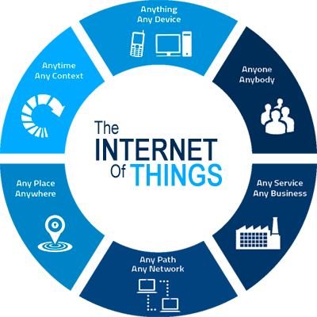

What is IoT? January 25, 2017 by Umesh Chatare The Internet of Things (IoT) is an environment in which objects, animals or people are provided with unique identifiers and the ability to transfer data over a network without requiring human-to- human or human-to-computer interaction. IoT has evolved from the convergence of wireless technologies, micro-electromechanical systems (MEMS) and the Internet. The concept may also be referred to as the Internet of Everything. A thing, in the Internet of Things, can be a person with a heart monitor implant, a farm animal with a biochip transponder, an automobile that has built-in sensors to alert the driver when tire pressure is low or any other natural or man-made object that can be assigned an IP address and provided with the ability to transfer data over a network. Introduction As of 2013, the vision of the Internet of Things has evolved due to a convergence of multiple technologies, ranging from wireless communication to the Internet and from embedded systems to micro-electromechanical systems (MEMS). This means that the traditional fields of embedded systems, wireless sensor networks, control systems, automation , and others all contribute to enabling the Internet of Things (IoT).  The concept of the Internet of Things first became popular in 1999, through the Auto-ID Center at MIT and related market-analysis publications. Radio-frequency identification (RFID) was seen by Kevin Ashton (one of the founders of the original Auto-ID Center) as a prerequisite for the Internet of Things at that point. If all objects and people in daily life were equipped with identifiers, computers could manage and inventory them. Besides using RFID, the tagging of things may be achieved through such technologies as near field communication, barcodes, QR codes and digital watermarking. Unique Addressability of Things: IPv6 ’s huge increase in address space is an important factor in the development of the Internet of Things. According to Steve Leibson, who identifies himself as “occasional docent at the Computer History Museum,” the address space expansion means that we could “assign an IPV6 address to every atom on the surface of the earth, and still have enough addresses left to do another 100+ earths.” In other words, humans could easily assign an IP address to every “thing” on the planet. An increase in the number of smart nodes, as well as the amount of upstream data the nodes generate, is expected to raise new concerns about data privacy, data sovereignty and security. Trends and characteristics : Intelligence: Ambient intelligence and autonomous control are not part of the original concept of the Internet of Thing Ambient intelligence and autonomous control do not necessarily require Internet structures, either. However, there is a shift in research to integrate the concepts of the Internet of Things and autonomous control, with initial outcomes towards this direction considering objects as the driving force for autonomous IoT. Network Architecture: Internet of Things requires huge scalability in the network space to handle the surge of devices. IETF 6Lo WPAN would be used to connect devices to IP networ With billions of devices being added to the internet space, IPv6 will play a major role in handling the network layer scalability. IETF’s Co nstrained Applicatio n P rotoco l , MQTT and ZeroMQ would provide lightweight data transport. Fog computing is a viable alternative to prevent such large burst of data flow through Internet. The edge devices’ computation power can be used to analyses and process data, thus providing easy real time scalability. Complex System: In semi-open or closed loops (i. value chains, whenever a global finality can be settled) it will therefore be considered and studied as a Complex system, due to the huge number of different links and interactions between autonomous actors, and its capacity to integrate new actors. At the overall stage (full open loop) it will likely be seen as a chaotic environment. Size and Space Considerations: The Internet of objects would encode 50 to 100 trillion objects, and be able to follow the movement of those objects. Human beings in surveyed urban environments are each surrounded by 1000 to 5000 trackable obje In an Internet of Things, the precise geographic location of a thing—and also the precise geographic dimensions of a thing—will be critical. Open Geospatial Consortium, “OGC Abstract Specification” Currently, the Internet has been primarily used to manage information processed by people. Sectors: There are three core sectors of the IoT: enterprise, home, and government, with the Enterprise Internet of Things (EIoT) being the largest of the thre By 2019, the EIoT sector is estimated to account for nearly 40% or 9.1 billion devices. Simulation: IOT modeling and simulation (and emulation) is typically carried out at the design stage before deployment of the network. Network simulators like OPNET, NetSim and NS2 can be used to simulate IOT networks. Security: Concerns have been raised that the Internet of Things is being developed rapidly without appropriate consideration of the profound security challenges involved and the regulatory changes that might be necessary. According to the BI (Business Insider) Intelligence Survey conducted in the last quarter of 2014, 39% of the respondents said that security is the biggest concern in adopting Internet of Things technology.[ The U.S. National Intelligence Council in an unclassified report maintains that it would be hard to deny “access to networks of sensors and remotely-controlled objects by enemies of the United States, criminals, and mischief makers. In general, the intelligence community views Internet of Things as a rich source of data. List of Some Mini Project (for TE, BE): IOT Liquid Level Monitoring System IOT Garbage Monitoring System IOT Based Home / Office / Industry Automation Smart Energy & Smart Grids Smart Healthcare Sensor Sleep Shirt Hybrid Data Exchange IoT and E-waste Management Environmental management and IoT. THANK YOU Umesh Chatare Take a break often and visit yourself every once in a while.